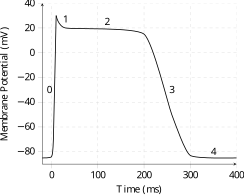
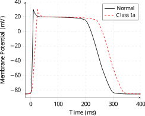
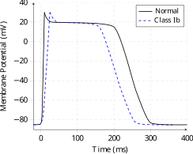
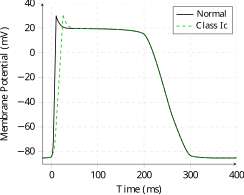
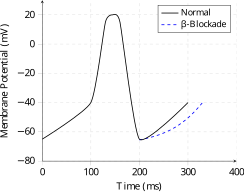
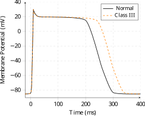
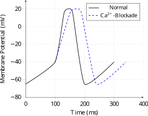

Antiarrhythmics
Understand the pharmacology of antiarrhythmic drugs
Antiarrhythmic drugs are typically classified using the Vaughan Williams classification system, which divides drugs into four classes based on their effect on the cardiac action potential. Many drugs will act via multiple mechanisms.
- Class I: Block voltage-gated Na+ channels
- Class Ia: Intermediate dissociation
- Class Ib: Fast dissociation
- Class Ic: Slow dissociation
- Class II: β-Blockers
- Class III: Prolong the action potential (Usually via K+ channel blockade)
- Class IV: Ca2+ antagonists
This classification is notably incomplete, as some drugs (such as amiodarone) fit into multiple categories, and others (such as digoxin, adenosine, and magnesium) fit into none.

Class I
- Na+-channel blockade inhibits action potential prolongation by blocking active and refractory sodium channels in a use-dependent fashion
- This inhibits tachyarrhythmias whilst allowing normal conduction
- Extent of block depends on the heart rate, membrane potential, and the subclass of drug
- Sodium channel blockade increases pacing threshold and defibrillation energy requirement
Class Ia
- Class Ia drugs have mixed properties of Ib and Ic, and also have Class III effects
- As they prolong the AV conduction and prolong the action potential they increase both QRS duration and the QT interval
- Examples include procainamide
Pro-arrhythmic effects may result because AV nodal conduction may be increased, so despite decreased atrial activity increased ventricular conductance results in a potentially fatal shortening of diastolic time

Class Ib
- Class Ib drugs bind to open sodium channel, and will associate and dissociate from a sodium channel in the course of a normal beat
- Tachyarrhythmias are prevented because dissociation occurs too slowly for a further action potential to be generated
- Class Ib drugs will bind selectively to refractory channels, such as occurs in ischaemia
- As they have little effect on normal cardiac tissue they have little effect on the ECG
- Examples of class Ib agents include include phenytoin and lignocaine

Class Ic
- Class Ic drugs associate and dissociate slowly creating a steady-state level of block
- This causes indiscriminate blockade and general reduction in excitability
- Class Ic agents are used to suppress unidirectional or intermittent conduction pathways
- As they markedly slow conduction velocity they increase QRS duration
- Examples of Class Ic agents include flecainide

| Procainamide | Lignocaine | Phenytoin | Flecainide | Mexiletine | |
|---|---|---|---|---|---|
| Aliases | Lidocaine Xylocard |
Dilantin DBL Phenytoin Injection |
Tambocor | Mexitil | |
| Class | Class Ia antiarrhythmic | Class Ib antiarrhythmic; aminoamide local anaesthetic | Anticonvulsant; class IB antiarrhythmic | Class Ic antiarrhythmic | Class Ib antiarrhythmic |
| Chemistry | Aminobenzamide | Aminoamide | Hydantoin | Monocarboxylic acid amide (benzamide); racemate | Lignocaine analogue |
| Dose | |||||
| Load (IV) | Up to 12mg/kg at ≤0.3mg/kg/min; max 1g | ||||
| Infusion (IV) | 50mcg/kg/min | 2-4mg/min | |||
| VT (IV) | 1mg/kg over 1-2 minutes; max 100mg | ||||
| Status (IV) | 10-15mg/kg; rate ≤50mg/min | ||||
| Dysrhythmia (IV) | 3-5mg/kg; repeat if required | ||||
| SVT/VT (IV) | 2mg/kg (up to 150mg) over 10-30 minutes; infusion 1.5mg/kg/hr | ||||
| SVT (PO) | 50mg BD; max 300mg/day | ||||
| VT (PO) | 100mg BD; max 400mg/day | ||||
| Ventricular arrhythmia (PO) | 200-300mg Q8H; max 1.2g/day | ||||
| Loading (PO) | 400mg, then 200mg after 8 hours | ||||
| Pharmaceutics | |||||
| Presentation | Clear 100mg/mL injection | Clear 20mg/mL injection; 100mg/mL infusion concentrate | 50mg/mL clear colourless solution with propylene glycol and ethanol | 50mg or 100mg tablet; clear 150mg/15mL injection | 150mg, 200mg and 250mg capsules |
| Compatibility | 5% glucose | 5.5% glucose; 0.9% NaCl; Ringer’s; sodium bicarbonate; dextran | Do not dilute; give into a large vein, flush with 0.9% NaCl; incompatible with glucose | 5% glucose only; chloride or alkaline solutions may precipitate | |
| Solubility | Highly water-soluble | Water-soluble | pH 12; pKa 8.0-9.2; poor water solubility | Water-soluble | Freely water- and alcohol-soluble; pKa 9.2 |
| Pharmacokinetics | |||||
| Absorption | 75-95% oral bioavailability; Tmax 1.5-2 hours | Oral bioavailability 35%; IV only for arrhythmia | IV bioavailability 100% | 90-95% oral bioavailability; Tmax ~3 hours; no first-pass effect | ~90% oral bioavailability; peak 2-3 hours |
| Distribution | pKa: 9.23 Vd: 1.5-2.5 L/kg Protein binding: 15-25% |
pKa: 7.9 Vd: 0.9 L/kg Protein binding: 70% |
pKa: 8.0-9.2 Vd: 1.6-2.5L Protein binding: 90% |
pKa: 9.3 Vd: 8.7 L/kg Protein binding: 40% |
pKa: 9.2 Vd: 5-7L/kg Protein binding: 50-60% |
| Metabolism | Half-life: 3-4 hours (parent drug) Duration: 4-8 hours (including active metabolite) Pathway: Hepatic acetylation (16-33%) Metabolites: NAPA (N-acetylprocainamide; active) |
Half-life: 10-20 minutes (IV bolus); 45-90 minutes (subcutaneous); 90-120 minutes (terminal) Pathway: Hepatic CYP1A2/3A4 (90-95%); active metabolites Metabolites: Monoethylglycinexylidide (active), Glycinexylidide (active) |
Half-life: ~22 hours; range 7-42 hours Duration: IV effect up to 24 hours Pathway: Hepatic CYP2C9 and CYP2C19 hydroxylation; saturable Metabolites: HPPH (inactive) |
Half-life: 20 hours Pathway: Hepatic (70%); active metabolites Metabolites: Active metabolites |
Half-life: 10-12 hours Pathway: Hepatic CYP2D6 and CYP1A2 Metabolites: Inactive hydroxylated and conjugated metabolites |
| Elimination | Renal: 30-60% urine unchanged; NAPA renally eliminated |
Renal: <10% excreted unchanged |
Renal: Biliary metabolites are reabsorbed then excreted in urine |
Renal: 30% excreted unchanged |
Renal: ~10% unchanged; urinary acidification ↑ excretion |
| Mechanism | |||||
| Target | Nav1.5 subunit of voltage-gated sodium channel Potassium channel |
Nav1.5 subunit of voltage-gated sodium channel | Voltage-gated Na+ channels | Nav1.5 subunit of voltage-gated sodium channel | Activated and inactivated cardiac Na+ channels |
| Action | Open Na+ channel block → ↓ Phase 0/conduction + ↑ QRS; K+ channel block → ↑ APD/refractory period/QT | Open/inactivated Na+ channel block with rapid dissociation → ↓ Phase 0, automaticity and APD in depolarised/ischaemic ventricular tissue; minimal effect on normal tissue or QRS; ↓ QT | Stabilises the inactivated state → ↓ generation and propagation of action potentials | Slow Na+ channel dissociation → use-dependent block → ↓ Phase 0 + conduction; minimal change in APD | Rapid use-dependent Na+ channel blockade → ↓ phase 0 upstroke and action-potential duration in ventricular tissue |
| Contraindications | Second/complete AV block or hemiblock without pacemaker Systemic lupus erythematosus TdP |
Severe SA, AV or intraventricular block Stokes-Adams syndrome Supraventricular arrhythmias |
Sinus bradycardia SA block Second- or third-degree AV block Stokes-Adams syndrome |
Second/third-degree AV block without pacemaker Bifascicular block without pacemaker Cardiogenic shock Post-MI asymptomatic PVCs or non-sustained VT Severe renal/hepatic impairment without plasma monitoring |
Cardiogenic shock Second- or third-degree AV block without a pacemaker |
| Pregnancy | |||||
| Code | B2 | A | D | B3 | B1 |
| Justification | Fetal hydantoin syndrome, neurodevelopmental disorder and fetal or neonatal bleeding | ||||
| Pharmacodynamics | |||||
| Respiratory | Rapid IV administration → respiratory depression | ||||
| CVS | ↓ SVR/BP/CO ↑ PR/QRS/QT; AV block TdP; proarrhythmia AF/flutter → ↑ ventricular rate |
AV block ↓ Inotropy/HR/MAP; cardiovascular collapse |
↓ MAP Bradycardia, conduction block and cardiac arrest ↓ Ventricular automaticity and QT |
↑ PR/QRS; minimal ↑ QT; heart block ↓ Inotropy; may precipitate CCF Proarrhythmia ↑ Pacing threshold ↑ Defibrillation energy requirement |
↓ Ventricular automaticity Minimal effect on QRS and QT Proarrhythmia |
| CNS | Dizziness | Circumoral tingling; paraesthesia Dizziness; visual disturbance; confusion Seizures; coma |
Anticonvulsant Ataxia, nystagmus and dysarthria |
Dizziness Visual disturbance Paraesthesia Headache |
Tremor Dizziness Ataxia Visual disturbance |
| Metabolic | Chronic use → ↓ vitamin D | ||||
| Gastrointestinal | Nausea; diarrhoea | Hepatotoxicity Gingival hyperplasia |
Nausea | N/V Heartburn |
|
| Haematological | Lupoid syndrome (20-30%; long-term) Agranulocytosis/bone marrow suppression (~0.5%) |
Folate deficiency and blood dyscrasias | |||
| Considerations | Slow acetylators → earlier lupoid syndrome Renal impairment → procainamide/NAPA accumulation ↑ Neuromuscular blockade Reduces antimicrobial effect of sulfonamides |
Shock, CCF, hepatic disease or prolonged infusion → ↓ clearance Propranolol, metoprolol or cimetidine → ↓ clearance |
Therapeutic total concentration 10-20microg/mL; free 0.8-2microg/mL Hypoalbuminaemia or uraemia → measure or interpret free concentration Continuous ECG and BP monitoring during IV loading High pH and propylene glycol → purple-glove syndrome and tissue necrosis Potent CYP inducer → many interactions SJS, TEN and DRESS |
↑ Mortality in heart failure patients Amiodarone → ↑ flecainide; halve flecainide dose Renal impairment or alkaline urine → ↓ elimination |
Give with food or antacid Therapeutic plasma concentration 0.5-2µg/mL Severe hepatic impairment or right heart failure → ↑ half-life Initiate in hospital for life-threatening ventricular arrhythmia |
Class II
Normal β-adrenergic stimulation has a number of pro-arrhythmic effects:
- Increased pacemaker potential current
- Increased slow-inward Ca2+ current
- Increased repolarising K+ and Cl- currents
- Increased Ca2+ stored in the sarcoplasmic reticulum, which may be spontaneously released causing a delayed-after-depolarisations
- Reduced serum [K+]
β-blockers have an antiarrhythmic effect by antagonising these mechanisms. They are useful for treatment of arrhythmias occurring with sympathetic over-activation, such as post MI.

| Esmolol | Metoprolol | Atenolol | Propranolol | |
|---|---|---|---|---|
| Aliases | Esmolol Noridem | Metoprolol IV Viatris | Tenormin; Noten | Inderal; Cardinol |
| Class | Ultra-short β1-selective blocker | β1-selective blocker | β1-selective blocker | Non-selective β blocker |
| Chemistry | Aryloxypropanolamine | Aryloxypropanolamine | Aryloxypropanolamine | Aryloxypropanolamine; racemate |
| Dose | ||||
| SVT (IV) | 500μg/kg over 1 minute → 50-200μg/kg/min | |||
| Arrhythmia (IV) | 1-5mg at 1-2mg/min; repeat q5min; usual total 10-15mg | 2.5mg boluses; max 10mg | 1mg boluses at <1mg/min; usual total 1-3mg | |
| Arrhythmia/HTN (PO, IR) | 12.5-100mg BD | |||
| HTN/angina (PO) | 50-100mg OD | |||
| HTN (PO) | 40mg BD; usual 120-320mg/day | |||
| Arrhythmia/thyrotoxicosis (PO) | 10-40mg TDS-QID | |||
| Paediatric arrhythmia (PO) | 0.25-0.5mg/kg TDS-QID | |||
| Pharmaceutics | ||||
| Presentation | Clear 100mg/10mL injection (10mg/mL) | 50mg or 100mg IR tablet; 23.75mg, 47.5mg, 95mg or 190mg CR tablet; clear 5mg/5mL injection | 25mg, 50mg or 100mg tablet; syrup; clear injection | 10mg or 40mg tablet; 160mg LA capsule; clear 1mg/mL injection |
| Compatibility | 0.45% or 0.9% NaCl; 5% glucose; Hartmann’s | 0.9% NaCl; 5% or 10% glucose; glucose/saline | ||
| Solubility | Minimal lipid solubility | Poor lipid solubility | Minimal lipid solubility | Highly lipid-soluble |
| Pharmacokinetics | ||||
| Absorption | IV only | 50% oral bioavailability | 45-55% oral bioavailability | 30% oral bioavailability |
| Distribution | pKa: 9.5 Vd: 3.4 L/kg Protein binding: 60% |
pKa: 9.7 Vd: 2.8-4.8 L/kg Protein binding: 12% |
pKa: 9.6 Vd: 0.3-0.6 L/kg Protein binding: 5% |
pKa: 9.45 Vd: 4 L/kg Protein binding: 95% |
| Metabolism | Half-life: 9 minutes Pathway: Red-cell esterase hydrolysis → inactive acid metabolite + methanol Metabolites: Inactive acid metabolite, Methyl alcohol |
Half-life: 3-4 hours Pathway: Hepatic CYP2D6 metabolism Metabolites: 2-hydroxymetoprolol (active; minor contribution) |
Half-life: 6-9 hours Pathway: Minimal hepatic metabolism |
Half-life: 3-6 hours Pathway: Extensive first-pass hepatic metabolism Metabolites: 4-hydroxypropranolol (active; oral only), Inactive metabolites |
| Elimination | Renal: <2% unchanged; 73-88% as acid metabolite in urine |
Renal: ~3% unchanged; remainder as metabolites in urine |
Renal: Excreted unchanged in urine |
Renal: 95-100% as metabolites/conjugates in urine |
| Mechanism | ||||
| Target | β1 adrenoreceptor | β1 adrenoreceptor | β1 adrenoreceptor | β1 adrenoreceptor β2 adrenoreceptor |
| Action | Competitive β1 antagonism → ↓ Gs-mediated cAMP | Competitive β1 antagonism → ↓ Gs-mediated cAMP | Competitive β1 antagonism → ↓ Gs-mediated cAMP | Competitive β1/β2 antagonism → ↓ Gs-mediated cAMP; membrane-stabilising activity |
| Contraindications | Severe bradycardia or sick sinus Second/third-degree AV block Cardiogenic shock or overt CCF Severe hypotension Acute asthma Untreated phaeochromocytoma Inotrope/vasopressor dependence |
Bronchospasm Sinus bradycardia or sick sinus Second/third-degree AV block Shock or uncontrolled CCF Hypotension Severe PVD Untreated phaeochromocytoma |
Bronchospasm Sinus bradycardia or sick sinus Second/third-degree AV block Shock or uncontrolled CCF Severe PVD Metabolic acidosis |
Asthma, bronchospasm or airway obstruction Sinus bradycardia or sick sinus Second/third-degree AV block Shock or CCF Hypotension Severe PVD Prolonged fasting/hypoglycaemia Untreated phaeochromocytoma |
| Pregnancy | ||||
| Code | C | C | C | C |
| Justification | Fetal/neonatal bradycardia | Fetal/neonatal bradycardia | Fetal/neonatal bradycardia | Fetal/neonatal bradycardia |
| Pharmacodynamics | ||||
| Respiratory | Bronchospasm | |||
| CVS | ↓ HR ↓ Inotropy ↓ MVO2 ↓ MAP |
↓ HR ↓ Inotropy ↓ MVO2 ↓ MAP |
↓ HR ↓ Inotropy ↓ MVO2 ↓ MAP |
↓ HR ↓ Inotropy ↓ MVO2 ↓ MAP ↑ SVR (β2 effect) Bradycardia/AV block |
| CNS | Tiredness Nightmares Sleep disturbance |
|||
| Endocrine | ↓ T4 → T3 conversion | |||
| Metabolic | ↓ Insulin release (β2 effect if selectivity lost) Masked hypoglycaemia |
↓ Insulin release (β2 effect if selectivity lost) Masked hypoglycaemia |
↓ Insulin release (β2 effect if selectivity lost) Masked hypoglycaemia |
↓ Insulin release Blunted hypoglycaemic response |
| Renal | ↓ Renin | ↓ Renin | ↓ Renin | |
| Considerations | Venous irritant Effects resolve within ~30 minutes of cessation IV verapamil → cardiac arrest Incompatible with NaHCO3, furosemide, diazepam or thiopental β1 selectivity ↓ at higher doses |
CYP2D6 polymorphism → variable half-life β1 selectivity ↓ at higher doses Verapamil/diltiazem → severe bradycardia/AV block/↓ inotropy Abrupt withdrawal → angina, arrhythmia or MI |
Renal impairment → dose reduction β1 selectivity ↓ at higher doses Verapamil/diltiazem → severe bradycardia/AV block/↓ inotropy Abrupt withdrawal → angina, arrhythmia or MI |
Verapamil/diltiazem → severe bradycardia/AV block/↓ inotropy Abrupt withdrawal → angina, arrhythmia or MI |
Class III
Blocking of outward K+ channels slows cardiac repolarisation, which increases the cardiac refractory period. This has a number of beneficial effects:
- Decreased automaticity
- Decreased ectopy
- Reduced defibrillation energy requirement
- Increased inotropy

| Amiodarone | Sotalol | |
|---|---|---|
| Aliases | Cordarone | Sotacor |
| Class | Class III antiarrhythmic | Class II/III antiarrhythmic |
| Chemistry | Iodinated benzofuran | Ethanolamine derivative |
| Dose | ||
| Cardiac arrest (IV) | 5mg/kg up to 300mg IV | |
| Arrhythmia (IV) | 5mg/kg over 20 minutes-2 hours; then 15mg/kg over 24 hours | 0.5-1.5mg/kg over 10 minutes; max 320mg/day |
| Maintenance (PO) | 200mg TDS for 1 week; then 200mg BD for 1 week; then 200mg OD | |
| Arrhythmia (PO) | 40-160mg BD | |
| Pharmaceutics | ||
| Presentation | 100mg or 200mg tablet; clear pale-yellow 150mg/3mL injection | 80mg or 160mg tablet; clear 10mg/mL injection |
| Compatibility | 5% glucose only; do not mix with other drugs | 0.9% NaCl; 5% glucose |
| Solubility | Highly lipid-soluble; poorly water-soluble | Highly water-soluble |
| Pharmacokinetics | ||
| Absorption | 20-80% oral bioavailability; slow and erratic; Tmax ~4.5 hours | ~100% oral bioavailability; Tmax 2-3 hours; ↓ with food or milk |
| Distribution | pKa: 6.56 Vd: 66 L/kg (adipose tissue and muscle accumulation) Protein binding: 96% |
pKa: 8.3 Vd: 1.6-2.4 L/kg Protein binding: None |
| Metabolism | Half-life: 29 days (mean) Duration: Delayed by redistribution; maximum Class I/IV effects may take weeks Pathway: Hepatic CYP3A4 → desethylamiodarone Metabolites: Desethylamiodarone (active) |
Half-life: 12.7 hours Pathway: Not metabolised |
| Elimination | Renal: <5% renal; predominantly biliary, skin and lacrimal; not dialysable |
Renal: 75% urine unchanged within 72 hours; <10% faeces |
| Mechanism | ||
| Target | IKr potassium channel Inactivated Na+ channel L-type Ca2+ channel β and α adrenoreceptors |
β adrenoreceptor (non-selective; no intrinsic sympathomimetic activity) Potassium channel (repolarising K+ current, Phase 3) |
| Action | IKr block → ↑ APD/QT; Na+ block → ↓ Phase 0; non-competitive β block + L-type Ca2+ block → ↓ SA/AV conduction; α-blocker-like activity → ↓ SVR | D/L isomers → K+ block → ↑ APD/QT; L-isomer → non-selective β block → ↓ AV conduction; no membrane-stabilising activity |
| Contraindications | Porphyria Sinus bradycardia or SA block Sick sinus or advanced AV block without pacemaker Thyroid dysfunction TdP-provoking drugs Severe ↓ BP or circulatory collapse (IV) Neonates (benzyl alcohol) |
Bronchospasm, asthma or COPD Sinus bradycardia or sick sinus Second/third-degree AV block without pacemaker Shock or uncontrolled CCF CrCl <10mL/min Long QT, TdP or hypomagnesaemia |
| Pregnancy | ||
| Code | C | C |
| Justification | Long t½; fetal thyroid dysfunction/bradycardia; check neonatal TFTs after exposure | Fetal/neonatal bradycardia |
| Pharmacodynamics | ||
| Respiratory | Pneumonitis (10% 3-year risk) Pulmonary fibrosis Pleuritis |
Bronchospasm |
| CVS | ↓ HR/BP/SVR ↑ QT; TdP uncommon Peripheral venous irritation Rapid IV → ↓ BP (polysorbate 80) |
↓ HR/BP/inotropy; AV block ↑ QT TdP; ↑ with high dose, long QT, electrolyte disturbance or renal impairment |
| CNS | Corneal microdeposits → blurred vision Sleep disturbance; vivid dreams Peripheral neuropathy |
Masking of hypoglycaemia symptoms |
| Endocrine | Hyperthyroidism (1%) Hypothyroidism (6%) |
|
| Musculoskeletal | Photosensitivity Grey skin discolouration |
|
| Genitourinary | Sexual dysfunction | |
| Gastrointestinal | Nausea; vomiting Hepatitis; cirrhosis; jaundice |
|
| Considerations | CYP3A4/2C9/2D6 + P-gp inhibition → ↑ digoxin, statin, warfarin, phenytoin and antiarrhythmic exposure Also exhibits Class I, II, and IV activity |
Renal impairment → accumulation + ↑ TdP risk Avoid Class Ia/III antiarrhythmics Abrupt withdrawal → angina, arrhythmia or MI |
Due to the prolonged repolarisation, they will also cause a long QT (though in the case of amiodarone this is not associated with an increased risk of TPD).
Class IV
Class IV drugs inhibit L-type Ca2+ channels, inhibiting the slow inward calcium current, which:
- Slows SA and AV nodal conduction
AV blockade slows transmission of supra-ventricular arrhythmias. - Reduces inotropy
- Prevents after-depolarisations
This suppresses ectopy by reducing calcium leak from sarcoplasmic reticulum.

| Verapamil | Diltiazem | |
|---|---|---|
| Aliases | Isoptin | Cardizem; Dilzem |
| Class | Non-dihydropyridine calcium channel blocker | Non-dihydropyridine calcium channel blocker |
| Chemistry | Phenylalkylamine; racemate (D-isomer has local anaesthetic activity) | Benzothiazepine |
| Dose | ||
| SVT (IV) | 75-150mcg/kg (usually 5mg) over ≥2 minutes; repeat after 5-10 minutes | |
| Paediatric HTN crisis (IV) | 0.05-0.1mg/kg/hr; usual max 1.5mg/kg/day | |
| HTN/angina (PO) | 40-120mg TDS | 30-120mg TDS; max 360mg/day |
| Rate control (SR) | 120-240mg BD | 120-360mg OD |
| Rate control (IV) | 0.25mg/kg over 2 minutes; repeat 0.35mg/kg after 15 minutes; infusion 5-15mg/hr | |
| Pharmaceutics | ||
| Presentation | 5mg/2mL injection; tablet; oral solution | 5mg/mL injection; 30mg, 60mg, 120mg or 180mg tablet; SR formulations |
| Solubility | Excellent lipid solubility | Excellent lipid solubility |
| Pharmacokinetics | ||
| Absorption | 24% oral bioavailability | 39% oral bioavailability |
| Distribution | pKa: 8.73 Vd: 3.8L/kg Protein binding: 84-91% |
pKa: 7.5 Vd: 5.3L/kg Protein binding: 80-86% |
| Metabolism | Half-life: 4.5-12 hours Duration: Exceeds plasma half-life Pathway: Hepatic; CYP3A4 substrate and inhibitor Metabolites: Norverapamil (active; ~20% potency) |
Half-life: 2-5 hours Duration: Exceeds plasma half-life Pathway: Hepatic; CYP3A4 substrate and inhibitor Metabolites: Desacetyldiltiazem (active; 25-50% potency) |
| Elimination | Renal: Metabolites |
Renal: Metabolites |
| Mechanism | ||
| Target | Cardiac and vascular L-type Ca2+ channel | Cardiac and vascular L-type Ca2+ channel |
| Action | State-dependent block → ↓ AV conduction, contractility and arterial/coronary tone | State-dependent block → ↓ AV conduction and arterial/coronary vasodilation |
| Contraindications | Cardiogenic shock or decompensated heart failure Sick sinus syndrome; 2nd or 3rd degree AV block without pacemaker Severe ↓ MAP AF/flutter with an accessory pathway Ventricular tachycardia Concurrent IV beta blocker outside ICU |
Sick sinus syndrome; 2nd or 3rd degree AV block without pacemaker Severe bradycardia Severe ↓ MAP or cardiogenic shock Severe heart failure Acute MI with pulmonary congestion AF/flutter with an accessory pathway Ventricular tachycardia IV beta blocker; IV dantrolene; ivabradine |
| Pregnancy | ||
| Code | C | C |
| Justification | Maternal ↓ MAP → fetal hypoxia | Maternal ↓ MAP → fetal hypoxia |
| Pharmacodynamics | ||
| CVS | ↓ SVR ↓ MAP ↓ Afterload ↓ HR ↓ AV conduction ↓ Inotropy Coronary vasodilation |
↓ SVR ↓ MAP ↓ Afterload ↓ HR ↓ AV conduction Mild ↓ Inotropy Coronary vasodilation |
| CNS | Headache | Headache |
| Endocrine | Gynaecomastia | |
| Musculoskeletal | Peripheral oedema Flushing |
Peripheral oedema Flushing |
| Gastrointestinal | Constipation | Constipation ↓ Lower oesophageal sphincter tone |
| Considerations | Beta blockers → bradycardia/AV block ↑ Digoxin concentration Prolonged neuromuscular blockade |
Beta blockers or digoxin → bradycardia/AV block Do not crush SR formulations |
Alternatives to Vaughan Williams
As the Vaughan Williams classification system does not neatly divide agents, and some agents do not fit into any category, they may also be classified by their uses:
| Indication | Examples |
|---|---|
| SVT | Digoxin, adenosine, verapamil, β-blockers |
| VT | Lignocaine, mexiletine |
| SVT/VT | Amiodarone, flecainide procainamide, sotalol |
| Digoxin toxicity | Phenytoin |
| Digoxin | Adenosine | Magnesium sulfate | |
|---|---|---|---|
| Aliases | Lanoxin | Adenocor | |
| Class | Cardiac glycoside | Antiarrhythmic | Electrolyte replacement |
| Chemistry | Cardiac glycoside | Endogenous purine nucleoside | Divalent cation salt |
| Dose | |||
| Maintenance (PO) | 62.5-250mcg OD | ||
| Load (PO) | 10-20mcg/kg | ||
| Load (IV) | 0.5-1mg total; 0.25-0.5mg Q4-6H, each over ≥5 minutes | ||
| SVT (IV) | 3mg, then 6mg, then 12mg; rapid bolus | ||
| Hypomagnesaemia (IV) | 10-20mmol over 10-20 minutes | ||
| Pharmaceutics | |||
| Presentation | 62.5mcg or 250mcg tablet; 50mcg/mL elixir; clear 250mcg/mL injection | Clear colourless 3mg/mL solution | Clear 2mmol/mL solution; dilute 10mmol in 100mL for peripheral IV |
| Compatibility | 5% glucose; 0.9% NaCl; 4% glucose/0.18% NaCl | 0.9% NaCl; Hartmann’s; 5% glucose; glucose/NaCl | |
| Solubility | Essentially insoluble in water | Slightly water-soluble | Water-soluble |
| Pharmacokinetics | |||
| Absorption | 70-80% oral bioavailability; P-glycoprotein efflux; onset 2-3 hours | 30% oral bioavailability; ↑ with magnesium depletion | |
| Distribution | pKa: 7.15 Vd: 5-11 L/kg (dependent on lean body mass) Protein binding: 25% |
pKa: -3 Protein binding: 30% |
|
| Metabolism | Half-life: 35-44 hours Pathway: Minimal hepatic (~16% of clearance) Metabolites: Dihydrodigoxin, Digoxygenin |
Half-life: <10 seconds Pathway: Cellular uptake → inosine and AMP Metabolites: Inosine, AMP |
Half-life: Approximately 4 hours Pathway: Not metabolised; cofactor in numerous metabolic processes |
| Elimination | Renal: 50-70% of IV dose excreted unchanged; half-life prolonged in renal failure |
Renal: Renal; reabsorption mainly in TAL/DCT; ↑ plasma Mg2+ → ↓ reabsorption |
|
| Mechanism | |||
| Target | Na+/K+ ATPase | A1 adenosine receptor | NMDA receptor L-type calcium channel |
| Action | Na+/K+ ATPase inhibition → ↑ intracellular Na+ → ↓ Na+/Ca2+ exchange → ↑ Ca2+ and inotropy; ↑ vagal tone → ↓ AV conduction; ↑ Phase 4 slope and automaticity | A1 activation → ↑ K+ efflux + ↓ Ca2+ current → SA/AV hyperpolarisation and transient AV block | ↑ Sarcoplasmic Ca2+ uptake → smooth muscle relaxation; ↓ acetylcholine release at NMJ; NMDA + L-type Ca2+ channel inhibition → CNS depression and ↓ AV conduction; Na+/K+ ATPase cofactor |
| Contraindications | 2nd/3rd-degree AV block VT/VF Digoxin-induced arrhythmia AF with accessory pathway Hypertrophic obstructive cardiomyopathy |
Sick sinus syndrome 2nd/3rd-degree AV block without pacemaker Asthma or COPD Long QT syndrome Severe ↓ MAP or decompensated CCF |
Heart block Severe renal failure |
| Pregnancy | |||
| Code | A | B2 | |
| Pharmacodynamics | |||
| Respiratory | Bronchospasm Dyspnoea; ↑ RR/VT |
Bronchodilation Respiratory depression |
|
| CVS | ↓ HR; ↑ inotropy/CO/coronary flow ↑ PR; ↓ QT Bigeminy; PVCs; AV block; SVT; VT Arterial vasoconstriction |
Transient AV block/asystole AF/flutter; ventricular ectopy ↓ MAP |
↓ SVR ↓ MAP ↓ HR |
| CNS | Red-green dyschromatopsia; visual disturbance Headache; ↓ LOC |
Headache; dizziness | CNS depression Anticonvulsant |
| Musculoskeletal | Muscle weakness Areflexia |
||
| Metabolic | Gynaecomastia | ||
| Genitourinary | ↓ Uterine tone and contractility | ||
| Gastrointestinal | Nausea Anorexia |
||
| Haematological | Eosinophilia Rash |
||
| Considerations | Narrow therapeutic index Renal impairment → ↓ elimination Hypokalaemia/hypomagnesaemia/hypercalcaemia → ↑ toxicity Toxicity + DC cardioversion → ↑ VF risk ↑ Levels: amiodarone, captopril, erythromycin, verapamil ↓ Levels: antacids, cholestyramine, phenytoin, metoclopramide |
Dipyridamole → ↑ effect Methylxanthines → ↓ effect Carbamazepine → ↑ AV block |
Potentiates neuromuscular blockers and CNS depressants Nifedipine → exaggerated ↓ MAP |
References
- Rang HP, Dale MM, Ritter JM, Flower RJ. Rang and Dale’s Pharmacology. 6th Ed. Churchill Livingstone.
- Brunton LL, Chabner BA, Knollmann BC, eds. Goodman & Gilman’s The Pharmacological Basis of Therapeutics. 12th Ed. McGraw-Hill. 2011.
- Peck TE, Hill SA. Pharmacology for Anaesthesia and Intensive Care. 4th Ed. Cambridge University Press. 2014.
- Therapeutic Goods Administration. Prescribing medicines in pregnancy database. Accessed 4 August 2026. https://www.tga.gov.au/resources/health-professional-information-and-resources/australian-categorisation-system-prescribing-medicines-pregnancy/prescribing-medicines-pregnancy-database
- Hospira, Inc. Procainamide Hydrochloride Injection, USP. United States Prescribing Information. Revised February 2026.
- Katzung BG, Masters SB, Trevor AJ, eds. Basic & Clinical Pharmacology. 12th Ed. McGraw-Hill. 2012.
- Young P, Psirides A. Wellington ICU Drug Manual. 2nd Ed. Wellington Regional Hospital. 2013.
- Smith S, Scarth E, Sasada M. Drugs in Anaesthesia and Intensive Care. 4th Ed. Oxford University Press. 2011.
- Aspen Pharmacare Australia Pty Ltd. Xylocard Australian Product Information. Revised 26 August 2024.
- Pfizer Australia Pty Ltd. DBL PHENYTOIN INJECTION Australian Product Information. Revised 26 June 2023.
- iNova Pharmaceuticals (Australia) Pty Limited. Tambocor Australian Product Information. Revised 29 May 2019.
- AvKARE. Mexiletine Hydrochloride Capsules USP official US label. Revised January 2026.
- InterPharma Pty Ltd. Esmolol Noridem Australian Product Information. Version 1.5. First approved 2 November 2022.
- Leslie RA, Johnson EK, Goodwin APL. Dr Podcast Scripts for the Primary FRCA. Cambridge University Press. 2011.
- Alphapharm Pty Ltd trading as Viatris. Metoprolol IV Viatris Australian Product Information. Revised 5 May 2022.
- Atnahs Pharma Australia Pty Ltd. Tenormin Australian Product Information. Revised 25 May 2026.
- Atnahs Pharma Australia Pty Ltd. Inderal Australian Product Information. Revised 29 July 2025.
- Juno Pharmaceuticals Pty Ltd. Amiodarone Juno Australian Product Information. Version 4.0. Revised 6 March 2025.
- Arrotex Pharmaceuticals Pty Ltd. Sotacor Australian Product Information. Revised 26 March 2026.
- Viatris Pty Ltd. Isoptin Injection Australian Product Information. Revised 17 June 2025.
- Sanofi-Aventis Australia Pty Ltd. Cardizem Australian Product Information. Revised 9 June 2026.
- Eugia US LLC. Diltiazem Hydrochloride Injection US Prescribing Information. Revised November 2025.
- Aspen Pharmacare Australia Pty Ltd. Lanoxin Australian Product Information. Revised 1 October 2025.
- Sanofi-Aventis Australia Pty Ltd. Adenocor Australian Product Information. Revised 27 July 2026.
- AFT Pharmaceuticals Pty Ltd. Magnesium Sulfate-AFT Australian Product Information. First approved 14 April 2025.